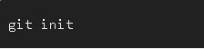
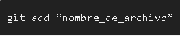
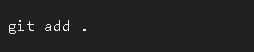
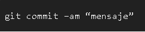
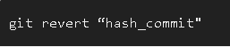
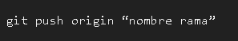

|
|
GIT¿Que es GIT?Git es una herramienta para realizar una funcion de control de versiones de codigo muy potente la cual y distribulle la informacion de manera rapida, git nos proporciona las herramientas para poder desarrollar nuestro trabajo ya sea software, una pagina web, cualquier aplicacion que implique usar un codigo usando un equipo de manera inteligente y rapida, al ser en linea podemos compartir nuestro codigo con nuestros compañeros Las caracteristicas importantes de Git son:git cuenta con ciertas ordenes basicas en el codigo, las cuales son:ORDENES BASICAS      |